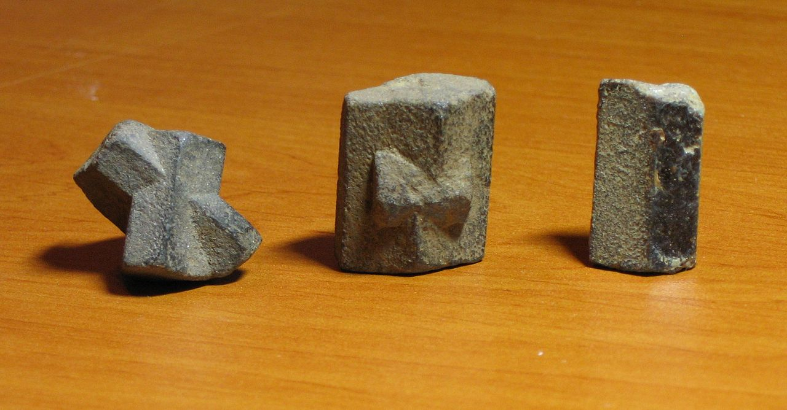

Pardon Sant Mikael - 2 stumm
Le pardon de Saint-Michel - 2 versions
The Saint-Michael Pilgrimage - 2 versions
Chant collecté par Théodore Hersart de La Villemarqué
dans le 2ème Carnet de Keransquer (p. 56 et 124/125).

Chapelle Saint-Michel de Brasparts
|
1° "War pont an Naoned" collecté par les "Daspunerien Bro C'hlazig" dans les années 70, repris par l'association "Dastum". (Fond sonore de cette page). |
|
|
2° "Kloarek Kreac'h Mikel" version de Haute Cornouaille, collectée par F. Vallée, pour "Musiques bretonnes" de M. Duhamel. |
|
|
3° "Son Kloareg" publiée dans "Carnets de route" de Y-F. Kemener" |
|
|
4° "Mariage manqué" publiée dans "Paroisse bretonne de Paris 1899-1929" par l'Abbé François Cadic (novembre 1911). |
|
|
5° "Kloarek Kreac'h Mikel" version du Trégor, chantée par M-J. Le Bail de Port-Blanc, publiée dans "Musiques bretonnes" de M. Duhamel (même mélodie, à part le tempo!, que pour Daou vreur). |
|
Arrangement Christian Souchon (c) 2020
|
A propos de la mélodie Le site "dastumedia" présente un enregistrement sonore (http://www.dastumedia.bzh/dyn/portal/index.seam?page=alo&aloId=83133) réalisé en 1979 à Ergué-Gabéric (à côté de Quimper, Cornouaille). La chanteuse s'appelle Marjan Mao. Le titre est "Ar plac'h nac'het gant ar c'hloareg", (La fille repoussée par le clerc) A propos du texte Le carnet N°2 contient une autre version de ce chant, pp. 124 et 125. Elle est intitulée simplement "Zon", suivi entre parenthèses de ce qu'on peut supposer être le nom du chanteur: Lois Lukas (Louis Lucas). Ce personnage n'a certainement aucun rapport avec l'héroïne de la gwerz notée une douzaine de pages plus haut dans le carnet, k115. Anaik Lukaz. En outre, c'est sans doute à ce chant et non au précédent (une variante de k58; La veuve) qu'il convient de rattacher la mention "Au Loc... en Arrès- Tréguier..." inscrite à la hauteur de ce titre. Une interprétation de cette mystérieuse annotation est proposée dans les notes [3] et [4] ci-après. Classification Malrieu Le site "Tob.kan.bzh" donne les indications suivantes: Référence : M-01100 Titre critique breton : Ar plach nachet gant kloareg Krech-Mikel Titre critique français : La fille refusée par le clerc de Krech-Mikel Thèmes : Dans les ordres, étudier, en voyage, amour et sentiments, amour contrarié, départ. (La pertinence de certains de ces thèmes est discutable). Les 6 versions Le distingue 8 versions et 12 occurrences, mais ne cite pas la version d'Egué-Gaberic, ni, bien entendu, les 2 versions collectées par La Villemarqué. En réalité, on connaît à ce jour 6 variantes principales: 14 str + variante de 4 str. Un jeune clerc rentré à la maison est envoyé au pardon de la chapelle Saint-Michel au bout d'une semaine. Il arrive, accompagné d'un autre jeune homme dont on ne nous dit rien, alors que les vêpres sont commencées. Deux jeunes filles les remarquent. L'une d'entre elles fait des avances aux jeunes gens qu'elle prie de la raccompagner chez elle. Le clerc déclare qu'il a déjà été fiancé par le passé à une jeune voisine, mais qu'il compte bien poursuivre ses études: ses livres sont à sa disposition chez le curé de Coadry. Dans 4.strophes supplémentaires qui n'appartiennent peut-être pas à cette version, la jeune fille fait miroiter le beau parti qu'elle ferait: elle a un jardin avec un colombier (autrefois, un apanage des nobles!) où il ne manque que des pigeons (entendez des oiseaux mâles: "kudoned"). Le jeune clerc répond que ce n'est pas aux colombes, "koulmed", de faire la loi. 21.str: Le début est identique, si ce n'est qu'il est dit que le clerc a été envoyé au pardon, alors qu'il était "tête baissée en train de moissonner" (kouch o vediñ, str.3); les intentions des jeunes filles sont on ne peut plus claires:"Je m'en vais les prier de m'accompagner jusque chez moi. Et si l'amour s'en mêle, celui-là sera mon fiancé!" ( str. 9/10. Le breton utilise le mot "servijer"= chevalier servant"). L'amour ne semble pas au rendez-vous, car le jeune homme se livre à un inventaire rapide du contenu de la maison: 2 cuillers, une écuelle, une chienne et un chat famélique, deux lits qui grincent et dépourvus d'édredons épais où le jeune clerc s'écorcha les coudes la première (?) nuit ( str.11-19). Les 2 dernières strophes évoquent 7 voitures avec leurs chevaux d'attelage qui attendent à la maison paternelle. On ne peut dire avec certitude qui parle: est-ce le jeune homme qui compare les maigres biens de la jeune fille avec sa propre fortune? Ou bien est-ce la jeune sirène qui se vante d'une fortune chimérique?
10. Me am eus kaset ma levrioù/ Da di person Koadri 11. Ha p'am bo ezhomm anezho/ Me a yel do cherchat di. Il manque cependant la première strophe, les strophes 11 et 12 qui évoquent la fiancée de quatorze ans et les strophes additionnelles (1) à (4) (métaphore du pigeonnier). 22 strophes est la plus détaillée. Le camarade qui accompagne le clerc au pardon est clairement mentionné aux strophes 5 et 6. La rencontre avec les deux jeunes filles a lieu à la sortie des vêpres (str.9 "Pa oa echu ar gosperoù, an dud o vont er-maez"). La vocation religieuse du clerc s'y exprime avec la dernière énergie, quand il repousse les avances de l'entreprenante jeune fille: - Désabusez-vous. Cest là une chose que je ne ferai pas. Moi je suis un jeune clerc, qui poursuis ses études. Jai laissé mes livres chez le recteur de Coadri. Par la grâce du Seigneur Dieu,jirai les y chercher. - Vous nêtes pas avancé (dans les ordres) au point de ne pouvoir vous marier ? - Si javais eu envie de me marier, je serais marié et bien marié à une jeune orpheline d'auprès de chez mon père. Celle-là a du bien, un four et un moulin, et un beau courtil pour se promener, avec, ou milieu, un colombier..." (str. 18 à 22, d'après la traduction de Luzel)
On peut penser que l'Abbé traduit inexactement les strophes 3 et 4 (son dialecte maternel est le vannetais): "Pa deuas ar poent midi/ Me oa kerhet d'ar ger/ Ha me monet d'ar pardon/ D'ar pardon Sant Mikel." "Quand il fut près de midi/ je m'en allais au village/ Et je partis au pardon/ au pardon de Saint-Michel"; alors qu'elles signifient: "Quand vint la période des moissons (mediñ)/ On me demanda de retourner à la maison/ Et d'aller au pardon/ au pardon de Saint-Michel". Il n'est pas question d'un camarade qui l'accompagne. Il suit les jeunes filles, mais non pas jusqu'à leur maison (str.11 'Koulskoude ez imp ur pennad, Non pas betek an ti"). Quand on parle de mariage, il s'empresse de dire qu'une jeune voisine lui avait déjà fait des avances en déclarant qu'elle était fille d'un riche propriétaire ("... oa merc'h un tieg bras"), str. 14. Les 4 dernières strophes décrivent le dénuement de la fameuse héritière: un "kanastell" (que le rapprochement avec la version LV2, conduit à traduire par "présentoir à vaisselle" et non "écumoire"), deux écuelles et trois cuillers. Il n'y a qu'un lit que le jeune homme dit avoir essayé (dans quelles circonstances?), comme dans LV2, car il le traite de "kozh gwele gouial/ evit kousket ennañ". Ce que l'abbé traduit par "Et un lit à barres de fer pour dormir dedans". Or "gwial" veut dire "bois flexible", et non "barre de fer". Il est vrai que comme ce mot désigne surtout des "verges", une note de bas de page propose une autre traduction: "et un vieux lit qui gémit" (parce qu'il est fouetté?). La dernière strophe conclut philosophiquement:"Voilà que je suis encore jeune homme et que j'étudie présentement."
- Sauf votre grâce, jeune fille, si j'avais voulu me marier, je serais bien marié, avec une jeune meunière tout près de chez mon père. Elle a des rentes et des revenus et de magnifiques jardins avec un pigeonnier au milieu....Gardez vos sept métairies et restez dans la huitième,car, savez-vous, je ne me marierai pas...Gardez votre haquenée sellée dans l'écurie, car je n'ai aucunement envie de me marier; L'autre jour, en rentrant de l'école de Quimper- Corentin, j'ai rencontré la Vierge tenant son enfant sur ses bras, Elle me disait d'être prêtre. Adieu à vous, ma bonne amie! " |
About the tune The site "dastumedia" presents a sound recording (http://www.dastumedia.bzh/dyn/portal/index.seam?page=alo&aloId=83133) made in 1979 in Ergué-Gabéric (near Quimper, Cornouaille). The singer was Mrs Marjan Mao. The normalized title is "Ar plac'h nac'het gant ar c'hloareg" (The girl refused by the clerk). About the lyrics: The notebook N ° 2 contains another version of this song, on pp. 124 and 125. It is simply titled "Zon" (A song), followed in parentheses by presumably the name of the singer: Lois Lukas (Louis Lucas). This character certainly has nothing to do with the heroine of the gwerz noted a dozen pages earlier in the notebook, k115. Anaik Lukaz. In addition, it is very likely to this song and not to the previous one (a variant to "k58. The Widow") that the mention (next to the title) "Au Loc ... en Arrès-Tréguier ..." should be connected. An interpretation of this mysterious hint is proposed in notes [3] and [4] below. Malrieu classification of this song The site "Tob.kan.bzh" gives the following information: Reference: M-01100 Breton critical title: Ar plach nachet gant kloareg Krech-Mikel English critical title: The girl refused by the cleric of Krechh-Mikel Themes: Entry into orders, student's life, travelling, love and feelings, upset love, departure. (The relevance of some of these themes is questionable). The 6 versions The Tob.kan.bzh site knows of 8 versions and 12 occurrences, but does not mention both the Ergué-Gaberic version, and, of course, the 2 versions collected by La Villemarqué. We know henceforth 6 main variants: 14 str + variant of 4 str. A young clerk who has returned home is sent to the Saint-Michel chapel pardon after a week. He gets there, along with another young man, of whom we are told nothing, when people are already singing vespers. Two young girls notice them. One girl makes advances to the young boys whom she begs to take her home. The clerk declares that he was already engaged in the past to a young neighbour, but that he intends to continue his studies: his books are available to him, kept by the parish priest of Coadry. In 4 additional strophes which perhaps do not belong to this version, the girl extolls what a good match she would be for him: she has a garden with a dovecote (which formerly only nobles were allowed to possess!) where unfortunately pigeons (i.e. male birds: "kudoned") are missing. The young clerk replies that it is not up to the doves ("koulmed", female birds), to give orders. 21.str: The beginning is identical, except that the clerk was sent to the Saint Michael pilgrimage, when he was "bent on harvesting" (kouch o vediñ, str.3); the intentions of the girls are very clear: "I am going to beg them to accompany me to my home. And if love gets involved, this one will be my fiancé!" (str. 9/10. The Breton language uses the word "servijer" = admirer, escort "). Love is apparently excluded as soon as the young man engages in a quick inventory of the contents of the house: two spoons and a bowl on display, a dog and a starving cat, two squeaky beds devoid of thick quilts where the young clerk scraped his elbows the first (?) night he spent there (str.11-19). The last two stanzas evoke seven carriages with their horses waiting at father's house. One cannot say with certainty who is speaking: is it the young man who compares the meager possessions of the girl with his own fortune? On the contrary, is it the young temptress who insists on boasting a chimerical wealth? 11 stanzas, is very close to the LV1 version in 14 stanzas: it ends with the mention of the books that the young clerk has at his disposal in Coadry: 10. Me am eus kaset ma levrioù / Da di person Koadri 11. Ha p'am bo ezhomm anezho / Me a yel d'o cherchat di. However, the first stanza is missing, as are stanzas 11 and 12 which evoke the fourteen-year-old fiancée and additional stanzas (1) to (4) (the dovecote metaphor). with 22 stanzas, is the most detailed one. The comrade who accompanies the clerk to the pilgrimage place is clearly mentioned in stanzas 5 and 6. The interview with the two girls takes place when vespers are finished (str.9 "Pa oa echu ar gosperoù, an dud o vont er-maez" ). The cleric's vocation is expressed here with the utmost energy, when he rejects the advances of the forward girl: - Disillusion yourself! That's a thing I'll never do. I am a young clerk, who wants to go on studying. I left my books with the parish priest of Coadry. If it pleases the Lord, I will go and fetch them. - Did you get so far (in priest education) that you cannot get married? - If I had wanted to get married, I would be married and well married to a young orphan, a neighbour of ours. She is rich, possesses an oven and a water mill and a beautiful yard, with a dovecote rught in the middle ... "(str. 18 to 22, after the translation by Luzel). has only 18 stanzas. It is a Leon version contributed by "A native of département Finistère who, though best conversant with Breton music", insists on anonymity. The priest possibly translated unaccurately stanzas 3 and 4 (his mother tongue was the Vannes dialect): "Pa deuas ar poent midi / Me oa kerhet d'ar ger / Ha me monet d'ar pardon / D'ar pardon Sant Mikel." "It was near noon / when I left for the village / And I went to the pardon fair / to the Saint-Michel pardon fair"; while they mean: "When the harvest (mediñ) period had begun/ I was asked to return home / And to go to the "pardon" / to the Saint-Michel's pardon". There is no mention of a comrade accompanying him. He follows the young girls, but not to their house (str.11 'Koulskoude ez imp ur pennad, Non pas betek an ti "). When one of the girls talks about marriage, he hastens to say that a neighbour's girl had already offered him her hand, emphasizing that she was a rich owner's daughter ("... oa merc'h un tieg bras"), str 14. The last 4 stanzas describe the poverty of said heiress: nothing in her house but a "kanastell" (which, with rference to the LV2 version, should translate as "dish cupboard" and not "skimmer"), two bowls and three spoons. There is only one bed that the young man admits to have tried (in what circumstances?), as in LV2, because he calls it of "kozh gwele gouial / evit kousket ennañ", which the priest translates as "And an iron bar bed to sleep on". Now "gwial" means "flexible wood, cane", not "iron bar". As this word primarily means "birch-rods", a footnote suggests another translation: "and an old moaning bed" (because it is birched?). The last verse concludes philosophically: "Now I am still a young man / who wants to go on studying" is the longest (31 stanzas). It is roughly the same story as before, except that to repel the advances of the forward young girl the young man sets forth a really irresistible argument: - With your leave, young girl, if I had wanted to marry, I would be well married, to a miller's daughter, who lives near my father's house. She has rents and incomes and wonderful gardens with a dovecote in the middle .... Keep your seven tenant farms and stay in the eighth, because, you know, I shall not marry ... Keep your saddled palfrey in its stable, because I don't want to get married; The other day, on returning from Quimper-Corentin school, I met the Holy Virgin holding her child on her arms. She urged me to become a priest. Farewell, my young lady! " |
 La version d'Ergué-Gabéric (EG)
La version d'Ergué-Gabéric (EG)1° Pardon Sant Mikael - stumm kentañ
Pardon de Saint-Michel - 1ère version
The Saint-Michael Pilgrimage - 1st version
|
BREZHONEK P. 56 Ballade (Son Dañs) 1. Gwechall pa oan bihanik digadon lanliri Gwechall pa oan bihanik digadon lanliri Er ger e ti ma zad digadon lanliri Er ger e ti ma zad. Digadon lanla 2. Me oa kaset da studiñ 'Vit bezañ desket mat . 3. A-benn ur sizhun goude Me da jeñchet ar ger. [1] 4. Evit mont dar pardon [2] Da chapel Sant-Michel. [5] 5. Sant Michel pa erruas, Oa gant ar gosperaoù.[6] 6. Ha me monet er vered, Da gaoseal hon daou. [7] __ 7. Me glev ar merched yaouank, Lar n eil deben anezhe: 8.- Ar bravañ zaou zen yaouank Zo war dachenn Sant Mikael. 9. Choant bras em eus do fediñ Da vont ganin dar ger: 10. Salv-ho-kras merched yaouank, 'Vit ho tiabuziñ. 11. Pe vin diwar ar poent-se. Me oa dimeet, pell zo 12. Dur plachik pevarzek vloa Deus kichen ti ma zad. 13. Mem-eus dilezet ma levrioù E ti person Koadri. [8] 14. Na pam-bo-me 'n ezhomm, Me yel davite di. - ********* (1) - Me m-eus ur jardin da vale, En e greiz ur chouldri. (2) Ne vank nemet kudoned Evit lakaat enni. (3) Salokraz, koulmed yaouank Hag a jom er chouldri, (4) Chwi nho-peus ket ar gallaout, Da zont da gomandiñ. [9] KLT gant Christian Souchon |
TRADUCTION FRANCAISE Page 56 Ballade (Chanson à danser) 1. Jadis quand jétais jeune Digadon lanliri Jadis quand j'étais jeune digadon lanliri Vivant chez mes parents digadon lanliri Vivant chez mes parents Digadon lanla 2. On me mit a l'école Pour me rendre savant. 3. Au bout dune semaine Je suis rentré chez moi. 4. Il y a dans la chapelle Saint-Michel un pardon. 5. On en était aux vêpres Quand je suis arrivé. 6. Et dans le cimetière Tous deux, avons causé. __ 7. Jentends les jeunes filles Qui discutent là-bas : 8.- Est-il plus charmant couple Ici que ces deux-là? - 9. Et lenvie me démange Qu'ils nous suivent chez moi. 10. Désolé, jeunes filles, Je dois vous décevoir: 11. Sachez sur ce chapitre Que je fus fiancé 12. Jadis à ma voisine De quatorze ans passés. 13. Mais jai confié mes livres Au curé de Coadry. 14. Sils me sont nécessaires Je sais quils sont chez lui. - ********* (1) - Au jardin de mon père Il est un colombier. (2) Seuls des pigeons nous manquent Qu'on y pourrait loger. (3) - De grâce mes colombes, Hôtes du colombier, (4) Il ne vous revient guère De vouloir commander. - Traduction: Christian Souchon |
ENGLISH TRANSLATION Page 56 A Ballad (A dancing song) 1. In times past when I was young Digadon lanliri In times past when I was young digadon lanliri And lived with my parents digadon lanliri And lived with my parents Digadon lanla 2. Was put in a college To make me learned and wise. 3. After a week had passed I had to come back home. . 4. Was sent to a "Pardon" Around Saint-Michael's church. 5. But when I turned up there: They were singing vespers. 6. My good friend and I stayed Chatting in the churchyard. ___ 7. I heared that young lasses Exchanged remarks on us: 8. - Look at the two handsomest Lads on the fair area. -. 9. I feel an urge to ask them If they would see me home... 10. - So sorry, my ladies, I must disappoint you: 11. Know that I was engaged, - 'T was a long time ago - 12. To a fourteen year girl. Was a neighbour of ours... 13. But I still keep my books They're at the priest of Coadry's. 14. As soon as I'll need them I'll go and fetch them back. - ********* (1) - I've a pleasure garden With a dovecote in it. (2) We just miss the pigeons Who'd settle there to nest . (3) - In God's name my young doves, Who nest in the dovecote! (4) You are not entitled To come and give orders! |
2° Pardon Sant Mikael - eilved stumm
Pardon de Saint-Michel - 2ème version
The Saint-Michael Pilgrimage - 2nd version
|
BREZHONEK P. 124 Chanson (Louis Lucas) Au Loc... en Arrée - Tréguier...[4] 1. Pa oan bihan, bihanik digadon lanliri Pa oan bihan, bihanik digadon lanla E ker, e ti ma zad digadon lanliri E ger e ti ma zad,. digadon lanla 2. Me oa kaset da studiañ 'vit bezañ desket mat. 3. Pa'z oan kouch e mediñ, me zo kerc'het dar ger. [1] 4. Evit mon't dar pardon [2] da chapel Krec'h Mikael, [3] [5] p. 125 / 66 5. Pa oan erru er pardon oant gant ar gousperoù.[6] 6. Ez eomp [7] da bourmeniñ dre ar vered hon daou. 7. Ma lare n div blac'h yaouank doc'h eil eben an(ezh)e: 8.- Sell aze vravañ kloareg zo r chapel Krec'h Mikael. 9. - Me deufe vit eñ pediñ, 'teufe dam c'has dar ger? 10. Hemañ da dre garantez a vo ma zervicher. - 11. Na pa oa erru ganin, n'oa na welet netra: 12. Nemet ur chanastell, ur skudell ha div loa. 13. Hag ur plankoù louedet da lakaat ar bara. 14. Hag ur giez luzian a zo da c'hadonañ. 15. Hag ur chazh bihan pikous a zo da logotañ. 16. Ha daou gozh gwele gwial a beb a du dan tan. 17. Dilhad a zo warnezhe n'int ket d'eus ar re voan. 18. Dilhad a zo warnezhe dimeus a fougasin. 19. Noz kentañ kouskis warne e kignis ma divlin (klin=coude) 20. Me am eus seizh karr houarn e karrdi leur ma zad. 21. Ha roñsed er marchosi evit o charreat. [9] = KLT gant Christian Souchon |
TRADUCTION FRANCAISE Page 124 Chanson (Louis Lucas) Au Loc... en Arrée - Tréguier... 1. Quand j'habitais en ville digadon lanliri Quand j'habitais en ville digadon lanla Que j'étais tout petit digadon lanliri Que j'étais tout petit. digadon lanla 2. L'on me mit au collège Pour être bien instruit. 3. J'étais à la récolte, Je dus rentrer chez moi 4. On me dit de me rendre A Krec'h Mikel tout droit. p. 125 / 66 5. On en était aux vêpres, Quand j'arrive au pardon. 6. Autour du cimetière Nous deux, nous promenions. 7. Il y a là deux filles L'une à l'autre disait: 8.- Voilà le plus aimable Clerc de tout Krec'h-Mikel. 9. Chez moi qu'il me conduise! Je vais lui demander. 10. Que l'amour lui suggère D'être mon fiancé! - 11. Quand j'arrivai chez elle, Il n'y avait rien à voir: 12. Deux cuillers, une écuelle Ornaient un présentoir 13. Quelques planches moisies Où déposer le pain. 14. Une chienne engourdie Pour chasser les lapins. 15. Une chatte bigleuse Pour chasser les souris. 16. Des deux côtés de l'âtre En ferraille, deux lits. 17. Des couvre-lits d'un genre On ne peut moins épais. 18. Couvre-lits dont personne N'oserait se vanter. 19. Dans ce lit de Procuste Mes coudes j'écorchais... 20. Pourtant j'ai sept voitures Qui m'attendent chez moi . 21. Des chevaux d'attelage Aussi, ça va de soi. = Traduction: Christian Souchon |
ENGLISH TRANSLATION Page 124 A Song (Louis Lucas) At Loc... in Arrée - Tréguier... 1. In times past when I was young Digadon lanliri In times past when I was young digadon lanliri And lived with my parents digadon lanliri And lived with my parents Digadon lanla 2. Was put in a college To make me learned and wise. 3. I was on harvest duty, When I got home 4. Because I wanted to go to the pardon feast At Krec'h Mikel Chapel. p. 125/66 5. They were singing vespers, When I arrived there 6. Around the cemetery The two of us were walking. 7. When we heard two young girls Who said to each other: 8.- This is the nicest clerk present At Krec'h-Mikel chapell. 9. - May I dare to offer him To see me home? 10. May love inspire him To become my fiance! - 11. When I entered her house There was nothing much to be seen: 12. Only two spoons and a bowl Upon a cupboard 13. Some moldy shelves Where to put the loaves of bread. 14. A numb bitch To go hare-hunting. 15. A curly cat To hunt mice. 16. On each side of the hearth An iron bar bed. 17. With bed covers on them: They couldn't be thinner. 18. Bedcovers no one should Dare to brag about. 19. The first night I slept there I skinned my elbows ... 20. - As for me, I've seven cars with iron wheels In the car shed at my father's house. 21. With horses in the stables to hitch up to them. = |
J-P. Belmondo et E. Riva dans "Léon Morin, prêtre" de J-P. Melville (1961)
NOTES:
|
[1] Me da jeñchet ar ger (LV1): mot à mot "moi, de changer de maison". La version de LV2, confirmée par les versions P et EG, est plus claire: LV2: 3. "Pa'z oan kouch e mediñ/ me zo kerc'het dar ger. 4. Evit mon't dar pardon / da chapel Krec'h Mikael," "Quand j'étais tête baissée à moissonner/ on me rappelle à la maison Pour aller au pardon/ de la chapelle Saint-Michel". Voici comment Luzel traduit ces 2 strophes ( version P): "Quand fut venu le temps de la moisson/ On me fit quérir à la maison, Pour aller au pardon/ A la chapelle de Saint-Michel". L'interruption des études ne trahit pas le dilettantisme du jeune homme, mais son assujétissement à d'impérieuses nécessités économiques. [2] Saint Michel en Cornouaille: Dans la version LV1 le chanteur de La Villemarqué semble hésiter entre "Michel" (français) et "Mikael" (breton). La version LV2 (str. 4 et str.8) précise que la chapelle, entourée d'un cimetière, où est célébré le pardon se situe sur un tertre (krec'h). Ces indications topographiques se retrouvent dans la version P à laquelle elles fournissent son titre ("Cloarec Creac'h Mikêl" -"creac'h"="krec"h", tiré de la str. 11 - La str. 8 parle du cimetière). Elles sont également présentes dans la version K collectée par Y-F. Kemener à Kerpert, à 20 km au sud de Guingamp (str. 4 et 10), ce qui nous éloignerait de la Cornouaille si le jeune clerc ne déclarait pas, à la strophe 29, avoir rencontré "an deiz all", l'autre jour, la Vierge en revenant de l'école de "Sant-Per Korantin", "Saint Pierre-Corentin". Il s'agit à l'évidence de "Quimper-Corentin" , le nom ancien de Quimper que La Fontaine a rendu célèbre par sa fable du "Chartier embourbé" (Près d'un certain canton de la basse Bretagne,/ Appelé Quimper-Corentin, / On sait assez que le Destin / Adresse là les gens quand il veut qu'on enrage: / Dieu nous préserve du voyage! " - Avec Jacques Brel, Vesoul connaîtra la même disgrâce injustifiée!). Cette déformation est à la fois l'indice d'une origine éloignée et la preuve de sa localisation spécifique. Une autre référence géographique est Coadry, paroisse dont le recteur conserve les livres du jeune clerc (à 30 km à l'ouest de Quimper). Elle est fournie par les versions LV1, EG et P. On est donc fondé à rechercher l'emplacement de la chapelle Saint Michel en Cornouaille. [3] Tertre Saint Michel: Le dictionnaire breton en ligne Devri.bzh indique "Menez-Mikael-an-Are, oronyme= Mont Saint-Michel de Brasparts (382 m). Autres noms: Tuchenn Mikael, Torgenn-Mikael, Tosenn Sant-Mikel Menez Sant-Mikael, Mene(z) Sant Mikêl, Menez Mikael Brasparz, Moudenn Kronon....et Krech Sant-Mikael". Cette dernière dénomination n'apparaît que dans le Barzhaz Breizh, dans le chant de 1845 Alan al Louarn:, strophes 8 & 9: "Adalek krec'h sant Mikel tre-beteg traon Elorn" Toutefois,on remarque que dans la traduction ("...depuis le Mont- Saint-Michel jusqu'aux vallées d'Elorn") et dans l'esprit du collecteur, il s'agit du "Mont Saint-Michel" de Normandie; D'ailleurs, le texte poursuit: "Adalek ti sant Weltas tre-beteg Penn-ar-Bed/ E pevar c'horn euz-a Vreiz beet al Louarn meulet", ce que La Villemarqué traduit ainsi: "Depuis l'abbaye de Saint Gildas, jusqu'au cap où finit la terre." Un coup d'oeil à la page 194 du carnet 2, nous apprend que le Barde a modifié le texte qu'il a entendu et remplacé par le "Krec'h Mikêl" emprunté au présent chant, un repère local, les "Menezioù Laz", les "Hauteurs de Laz", dont parlait l'authentique chant qui lui a inspiré son "Alain Barbe-Torte". D'ailleurs ce modèle envisage les "pevar korn Breizh Izel" (les quatre coins de la Basse-Bretagne), ce que la fresque historique que brosse La Villemarqué transforme en "pevar korn euz aVreiz ..." (les quatre coins de la Bretagne, Haute et Basse)"! Selon le même dictionnaire, le "Mont Saint Michel" serait plutôt "Menez Mikael ar Mor" (Mont Saint-Michel-de-la Mer). Ce n'est pas ce qu'indique le dictionnaire du Père Grégoire de Rostrenen qui traduit "Le Mont Saint-Michel ou Saint Michel au péril de la mer par 'Lommicqael an traez'. [4] "Au Lok en Arrée - Tréguier...": Cette mystérieuse annotation précède le titre de LV2 , selon la lecture faite par la bibliothèque numérique du CRBC. La présence du nom "Tréguier", lisible distinctement, à de quoi surprendre. Une interprétation est suggérée par un article du poète Léon Le Berre "Ab Alor", paru dans la revue "Le Consortium Breton" de juillet 1927: "Ecoutons maintenant le bon Albert Le-Grand de Morlaix, dont tout Breton et tout celtisant devrait avoir dans sa bibliothèque la Vie des Saints. Il s'agit de saint Tugdual de Tréguier qui, ayant demeuré deux mois à Rome ... se trouvait une nuit en prières. «Un ange lui apparut... [qui] le mena hors la ville, et ... lui présenta un cheval blanc avec commandement d'aller résider en son évêché, puis disparut. Ce cheval miraculeux le porta si légèrement en l'air, qu'au point du jour, il se trouva sur un petit tertre, à la vue du monastère de Trécor [à Tréguier], où, ayant mis pied à terre, ce cheval miraculeux ... monta visiblement au Ciel, et en souvenir de cette merveille, au même lieu, fut depuis bâtie une église en l'honneur des Saints Anges qui encore s'appelle Kreac'h-Mikaël, c'est-à-dire "colline de Michel". Le tertre d'où on apercevait le clocher de ce monastère pouvait difficilement être Saint-Michel de Braspart. Mais peut-être La Villemarqué connaissait-il ce passage d'Albert Le-Grand, ce qui expliquerait qu'il ait inscrit ici le mot "Tréguier" précédé d'un nom qu'il connaissait ou qu'il a reconstitué en démarquant le Père Grégoire: "Lokmikael-an-Are" [5] La Chapelle Saint-Michel: C'est en 1672 qu'on décida de construire une chapelle au sommet de la "Motte Cronon" à Brasparts.La chapelle fut consacrée le 29 septembre 1677, jour de la Saint-Michel et elle fut aussitôt très fréquentée en particulier par les bergers jusqu'en 1860 tant que l'élevage des moutons domina dans les monts d'Arrée. Une nouvelle chapelle fut consacrée en 1821 en remplacement de la première tombée en ruines à partir de 1795, comme l'indique Jacques Cambry dans son "Voyage dans le Finistère ou état de ce département en 1794 et 1795" ( T 1 pages 235-242, Paris, 1798). Le lieu est, toujours selon le même auteur, fréquenté par les marchands les jours de pardon. Le présent chant nous apprend que l'ancienne chapelle était accompagnée d'un cimetière. [6] Les pardons de Saint-Michel: Un témoignage de 1902 indique : « Saint-Michel est particulièrement invoqué pour obtenir du beau temps pendant la récolte ; on le prie aussi pour les malades ; on voit assez souvent les pèlerins faire le tour de la chapelle à l'intérieur, nu-pieds ». Saint Michel était aussi invoqué pour les enfants et les infirmes : des béquilles en guise d'ex-votos étaient accrochées sur les murs. Dès le début, deux pardons sont organisés dans l'année : le premier à la « Saint Michel, le 29 septembre », le second le jour de « Saint Michel du mois de may». le 8 mai .. Dans notre chant, le héros est envoyé au pardon après les moissons.Il sagit donc de la fête de septembre. « Le Courrier du Finistère », n° 1948, 26 mai 1917 décrit les festivités de septembre: « La procession partit de Brasparts à 8 h ½ (...) En route le pieux cortège alla toujours grossissant. Vers 10 heures on arrivait au pied de la montagne. Pendant le trajet on récita le rosaire, on chanta les litanies des saints et le cantique à Saint Michel : « Euz ho troñ savet huel / War lein Menez Are/ Beilhit warnomp, Arc'hel santel / Beilhit warnomp e pep mare» (« De votre trône élevé sur le faîte des Monts dArrée, veillez sur nous, saint archange, à tout instant»). À 10 h ½, la procession de Brasparts arrivait à la chapelle où se trouvaient déjà de nombreux pèlerins venus ... de toutes les paroisses des environs: de Saint-Rivoal et de Saint-Cadou, de Lannédern, de Botmeur, de Brennilis, de La Feuillée, de Commana, de Saint-Sauveur, etc.». [7] Hon daou (LV1) / Ez eomp (LV2): "Nous deux" et "Nous allons". Il faut comprendre que le clerc, se rend au pardon accompagné d"un camarade, formant un couple que les jeunes filles désignent quelques strophes plus loin comme "ar bravañ zaou zen yaouank / zo war dachenn Sant Mikael" (LV1 str.8). Si la version (C) n'envisage qu'un seul pèlerin, les versions (P) et (K) racontent comment le clerc va chercher son camarade avant de se mettre en route. A la strophe 8 de LV1 l'expression "ar braoa zen iaouank" (graphie d'origine= "les plus beaux jeunes gens") suggère qu'il manque le mot "daou" (deux) qui commande la mutation de "den" en "zen", et qu'il faille corriger la phrase en "Ar bravañ daou zen yaouank", "les deux plus beaux jeunes hommes".. Mais ce n'est pas le cas dans la version LV2: l'attention de la fille en quête de mari se focalise sur le jeune clerc et lui seul! . [8] Coadry (LV1]: Entre les villages de Coadry et Restambern...on trouve des pierres contenant de gros cristaux de 2 à 8 cm en forme de croix de saint André, appelées « pierres de Coadry ». D'un point de vue géologique, ces pierres sont des "staurotides"... composés de silicate d'alumine et de fer. Leur forme curieuse en croix a contribué à inspirer de nombreuses légendes... Jacques Cambry, dans son "Voyage dans le Finistère" écrit : «Les pauvres les vendent aux pèlerins, aux étrangers : il est peu de ménages où l'on n'en conserve comme préservatifs, comme talismans contre les naufrages et les chiens enragés : on la croit propre à guérir les maux d'yeux ; des religieuses en faisaient des sachets, qu'on suspendait au col ou qu'on portait dans sa poche ». Un vieux proverbe de Cornouaille dit: « Montez sur un arbre et cassez-vous le cou : Avec les pierres de Coadry vous n'aurez aucun mal » (Pignit ba 'r wezenn, torrit ho koug : G'ar mein Koadri n'ho pet tamm droug). (sous-entendu: "ouzhpenn", supplémentaire!) On les plaçait au pied des maisons pour se protéger de la foudre: ce qui leur valut aussi le nom de « pierre à tonnerre ». Ces pierres servaient aussi de bijoux et de parures féminines. (Source: Wikipédia). Les pierres de Coadry se vendaient sans doute au Pardon de Saint-Michel de Brasparts, ce qui expliquerait la présence de ce toponyme dans 3 des 6 versions: LV1, EG et P. [9] Un chant misogyne?: Dans plus d'un chant de clerc, le héros hésite entre les études qui débouchent sur la prêtrise et le mariage. Le titre donné à la version de Marjan Mao "La fille repoussée par le clerc" indique bien le choix qui est fait.par l'intéressé. Dans le manuscrit LV1, les strophes additionnelles rangées dans l'ordre 3, 4, 1, 2 semblent exprimer une misogynie de mauvais aloi, lorsque le clerc déclare être sourd aux commentaires des jeunes filles qui déplorent la séparation du couple. En réalité, le garçon veut dire, semble-t-il, que bien qu'elles soient aussi nombreuses que les colombes dans un colombier, les jeunes filles ne le feront pas changer d'avis. La mentalité utilitariste de ce futur prêtre ne semble pas avoir choqué l'abbé François Cadic qui écrivait en 1911: "Cet étudiant ne manquait pas de sagesse..Il retourna à ses cours, en se disant que mieux vaut rester dans le commerce des belles lettres que de donner sa parole à une héritière dont l'apport dotal consiste uniquement en ...deux écuelles, trois cuillers et un mauvais lit en fer. Combien de gens mal mariés auraient dû se montrer aussi avisés!" | .
[1] Me da jeñchet ar ger: literally: "I [had] to change to another house"
The LV2 version, corroborated by versions P and EG, is easier to construe: LV2: 3. "Pa'z oan kouch e mediñ/ me zo kerc'het dar ger. 4. Evit mon't dar pardon / da chapel Krec'h Mikael," "As I was bent on harvesting / I was sent back home Then I was ordered to the Pardon/ At Hill Saint Michael chapel. which is equivalent to Luzel's tranlation of those 2 strophes ( version P): "Quand fut venu le temps de la moisson/ On me fit quérir à la maison, Pour aller au pardon/ A la chapelle de Saint-Michel". The interruption of studies does not betray the young man's dilettantism, but his subjection to imperative economic necessity. [2] Saint Michael in Cornouaille: The singer of La Villemarqué's LV1 version seems to hesitate between "Michel" (French) and "Mikael" (Breton). The LV2 version (str. 4 and str. 8) specifies that the chapel, surrounded by a churchyard, where "Pardons" are celebrated, is located on top a mound (krec'h). These topographical indications are found in the P version to which they provide a title ("Cloarec Creac'h Mikêl" - "creac'h"="krec'h", taken from str.11 and str. 8 mentions a churchyard). They are also present in the version K collected by Y-F. Kemener at Kerpert, 20 km south of Guingamp (str. 4 and 10), which would take us away from Cornouaillel if the young clerk did not declare, in stanza 29, having encountered "an deiz all" the other day, the Virgin on his way home from school in "Sant-Per Korantin" , "Saint Pierre- Corentin ". It is obviously" Quimper-Corentin ", the old name of Quimper that La Fontaine made famous by his fable of " the Carter in the mire" ("Near Quimper Corentan,-- A town that poet never sang,-- Which Fate, they say, puts in the traveller's path, - When she would rouse the man to special wrath. - May Heaven preserve us from that route!") - At the hands of songster Jacques Brel, Vesoul town was to experience the same unjustified disgrace!) . The corrupt placename is both a hint at a distant origin and a proof that a specific place is meant. Another geographic reference is Coadry , a parish whose rector keeps the books of the young cleric (30 km west of Quimper). It is cited by the LV1, EG and P versions. We are therefore justified in researching the location of the Saint Michael chapel in Cornouaille. [3] Saint Michel Hill: As stated in the Devri.bzh online Breton dictionary, "Menez-Mikael-an-Are, oronym = Mount Saint-Michel de Brasparts (382 m). Also known as: Tuchenn Mikael, Torgenn-Mikael, Tosenn Sant-Mikel Menez Sant-Mikael, Mene (z) Sant Mikêl, Menez Mikael Brasparz, Moudenn Kronon .... and Krech Sant-Mikael". The last-mentioned name appears only in Barzhaz Breizh, in the 1845 song Alan al Louarn, stanzas 8 & 9: "Adalek krec'h sant Mikel tre-beteg traon Elorn". However, we may infer from the translation ("... from Mont-Saint-Michel to the Elorn valleys"), that the song collector meant the "Mont Saint-Michel" of Normandy ; Besides, the text continues: "Adalek ti sant Weltas tre-beteg Penn-ar-Bed / E pevar c'horn euz-a Vreiz beet al Louarn meulet", which La Villemarqué translates as: "From Saint Gildas Abbey, to the cape where Earth goes to an end." By looking at page 194 of Notebook 2, we will satisfy ourselves that the Bard modified the text he recorded and replaced by the "Krec'h Mikêl" borrowed from the present song, a local landmark, the "Menezioù Laz", the" Heights of Laz ", addressed in the authentic folk song which inspired his" Alain Barbe-Torte". Besides, this model mentions the "pevar korn Breizh Izel" (i.e. the four corners of Lower -Brittany) , that become in the historical fresco drawn up by La Villemarqué "pevar korn euz a Vreiz ..." (the four corners of Brittany, both Upper and Lower)"! According to the same dictionary, "Mont Saint Michel" usually translates as "Menez Mikael ar Mor " (Mont Saint-Michel-on-the-Sea). This is not what the 1732 dictionary of Father Grégoire de Rostrenen indicates which translates "Le Mont Saint-Michel or Saint Michel at the peril of the sea" as 'Lommicqael an traez'. [4] "Au Lok en Arrée - Tréguier ...": This mysterious mention precedes the title of LV2, if we are to trust the deciphering of the ms by the CRBC digital library. The presence of the placename "Tréguier", clearly legible, is surprising. An interpretation is suggested by an article published by the poet Léon Le Berre "Ab Alor" in the July 1927 issue of the review "Le Consortium Breton": "Let us now listen to old Albert Le-Grand of Morlaix, the author of " the Life of the Saints", a book which all Breton and all Celticists should have in their library. He tells us of Saint Tugdual of Tréguier who, having lived two months in Rome ... was one night in prayer. "An angel appeared to him ... [who] led him out of town, and ... presented him with a white horse with the command to repair back to his bishopric. Then he disappeared. The wonder horse carried him so swiftly up in the air, that at daybreak, he found himself on a small mound, where he could spy his Trécor monastery [at Tréguier] in the distance. There, after he had dismounted, he saw the wonder horse ... dash up to Heaven, and in memory of this wonder, in this very place, was built a chapel of the Holy Angels, also called Kreac'h-Mikaël, i.e. the "Michael's Hill" chapel. The mound from which he could see his monastery steeple could hardly be Saint-Michel de Braspart. But we may assume that La Villemarqué knew this passage from Albert Le-Grand's book, which would explain why he wrote here the word "Tréguier" preceded by a compound which he knew or which he reconstructed after Father Grégoire: "Lokmikael-an-Are". [5] The Saint-Michel Chapel: In 1672 it was decided that a chapel should be built at the top of the "Moudenn Kronon" in Brasparts. The chapel was consecrated on September 29, 1677, on Saint-Michael's day and it was immediately very popular especially with shepherds until 1860, as long as sheep farming was the staple pursuit in the Monts d'Arrée. A new chapel was consecrated in 1821 to replace the first, fallen into ruins from 1795, as Jacques Cambry reports in his "Voyage in Finistère or state of this département in 1794 and 1795" (T 1 pages 235-242 , Paris, 1798). The place is, always according to the same author, frequented by merchants on "Pardon" days. The song at hand tells us that the old chapel was surrounded by a churchyard. [6] Saint-Michel "pardon" feasts: A testimony from 1902 states: Saint-Michael is particularly invoked to obtain good weather during the harvest; they also pray to him for the sick; we often see pilgrims walking around barefoot inside the chapel. Saint Michael was also invoked for children and the infirm: crutches by way of votive offerings were hung on the walls. From the start, two pardons were organized during the year: the first on "Saint Michael's day", on September 29, the second on "Saint Michael's feast in the Month of May", on May 8 .. Since in the song at hand the hero is sent on pilgrimage after the harvest, the story is about the September "pardon". "Le Courrier du Finistère", n ° 1948, May 26, 1917 describes the September festivities as follows: "The procession left Brasparts at 8:30 am (...) On the way the pious procession continued to grow. Around 10 am they arrived at the foot of the hill. As they went uphill they recited the rosary, they sang the litanies of the saints and the hymn to Saint Michael: "Euz ho troñ savet huel / War lein Menez Are / Beilhit warnomp, Arc'hel santel / Beilhit warnomp e pep mare" ("From your lofty throne on the Mounts of 'Arrée, watch over us, holy Archangel, at all times ). At 10:30 a.m., the Brasparts procession reached the chapel where were, already waiting, many pilgrims from ... all parishes around: Saint-Rivoal and Saint-Cadou, Lannédern, Botmeur, Brennilis, La Feuillée, Commana, Saint-Sauveur, etc. . [7] Hon daou (LV1) / Ez eomp (LV2): "Both of us" and "We go". It should be understood that the cleric, goes to "Pardon" accompanied by a comrade, the two of them being addressed by the young girls, a few stanzas later, as "ar bravañ zaou zen yaouank / zo war dachenn Sant Mikael. "(LV1 str.8). If version (C) envisages only one pilgrim, versions (P) and (K) tell how the cleric did fetch his friend before setting off. In stanza 8 of LV1 the expression "ar braoa zen iaouank" (original spelling = "the handsomest young men") suggests that the word "daou" (two) is missing, which implies the mutation of "den" to "zen", so that the phrase should be corrected to "Ar bravañ daou zen yaouank"... But this is not the case in the LV2 version: the attention of the girl looking for a husband focuses on the young clerk and him alone! [8] Coadry (LV1): Between the villages Coadry and Restambern ... they find stones containing big crystals 2 to 8 cm in size, in the form of a St. Andrew's cross, known as "stones of Coadry". From a geological point of view, these stones are "staurotides" ... composed of silicate of alumina and iron. Their curious cross form has originated many a legend ... Jacques Cambry, in his "Travel in Finistere" writes: "The poor sell these stones to pilgrims, to foreigners: there are few households where they are not kept as lucky charms or talismans against shipwrecks and rabid dogs. That stone is believed to be a cure for sore eyes. Nuns wrapped them in little bags for people to wear round their necks, or in their pockets." An old proverb from the Quimper area says: "Climb on a tree and break your neck: With the stones of Coadry you will have no harm » (Pignit ba 'r wezenn, torrit ho koug: G'ar mein Koadri n'ho pet tamm droug). (implied: "ouzhpenn", in addition!) Since these stones often were buried at the foot of houses to protect them from lightning, this earned them the name of "thunder stone". They also were used as jewelry and feminine adornments. (Source: Wikipedia). Coadry stones were possibly sold at the Saint-Michel de Brasparts "Pardon" fair, which would account for the presence of this toponym in 3 of the 6 versions of the song at hand: LV1, EG and P. [9] A misogynist song?: In more than one cleric's song, the hero hesitates between studying for priesthood and marriage. The title given to the Marjan Mao version, "The girl turned down by the clerk" indicates the choice made by the latter. In the LV1 manuscript, the additional stanzas, recorded in the order 3, 4, 1, 2, seem to express bad taste misogyny, when the clerk chooses to ignore the comments of the girls who deplore the splitting up of the couple. In reality, what he means could be: although they are as numerous as doves in a dovecote, the girls will not make him change his mind. The utilitarian mentality of this future priest does not seem to have shocked Father François Cadic who wrote in 1911: "This student was not lacking in wisdom. He returned to his lessons, considering that it is better to keep company with classic authors than to be engaged to an heiress whose dotal contribution consists only of ... two bowls, three spoons and a bad iron bed. How many unhappily married people should have been so wise! " |

Staurolites de Coadry
Par Original téléversé par Ludm sur Wikipédia français
Transféré de fr.wikipedia à Commons par Bloody-libu utilisant CommonsHelper., CC BY-SA 3.0,
https://commons.wikimedia.org/w/index.php?curid=17785144